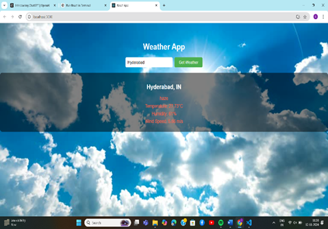

← Back
Sudoku Solver
- Developed a Sudoku-solving algorithm in Java using backtracking and constraint checking.
- Efficiently explored possible number placements and reverted on invalid configs.
- Validated constraints for rows, columns, and 3×3 sub-grids to ensure correctness.
- Recursive approach used to iterate until a solution is found.
- Displayed output with a clear, user-friendly layout or a message if unsolvable.
Weather App

- Developed a weather application using Node.js to fetch and display real-time weather data from external APIs.
- Created a backend server to manage API requests, process responses, and serve accurate data.
- Designed an interactive UI to dynamically show temperature, humidity, and weather conditions.
- Integrated real-time APIs such as OpenWeatherMap or WeatherAPI for live updates.
- Added city search and geolocation-based weather display functionality.